Production-grade distributed systems, agentic security frameworks, and deep learning architectures with full open-source implementations.
Comparative intelligence across hands-on engineering systems, deep learning research, and verified certifications.
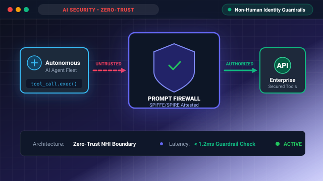
Zero-Trust Non-Human Identity (NHI) boundary and runtime prompt firewall protecting autonomous multi-agent tool execution with cryptographic SPIFFE/SPIRE attestation and policy enforcement.
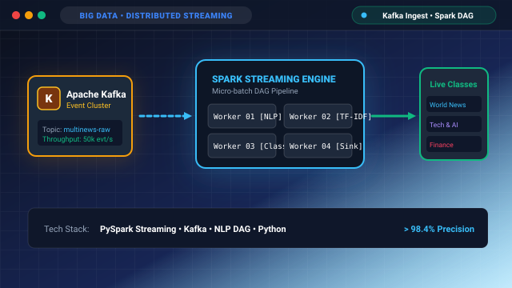
Distributed Apache Spark Streaming architecture with Kafka event ingestion, tokenization DAG, and real-time multilingual topic classification across worker nodes.
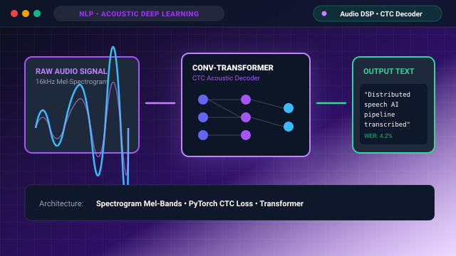
End-to-end acoustic spectrogram feature extraction and Connectionist Temporal Classification (CTC) neural speech-to-text decoding engine.
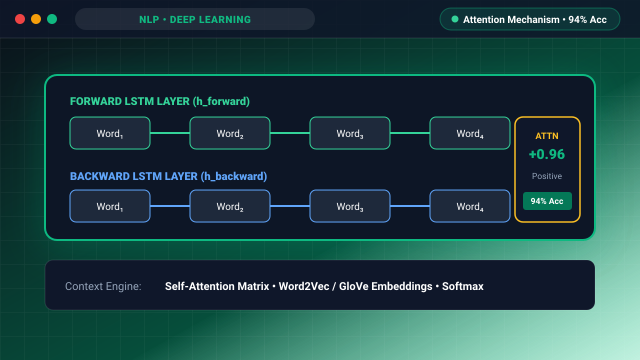
Bidirectional LSTM recurrent network paired with self-attention mechanisms for deep contextual sentiment polarity evaluation.
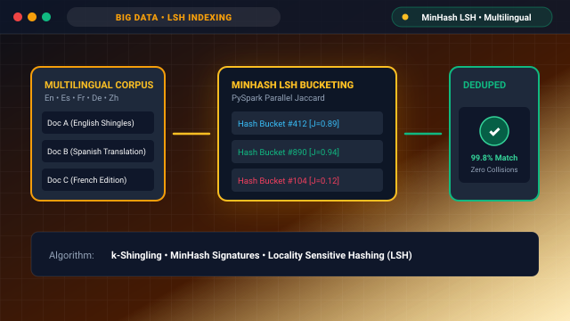
Distributed MinHash Locality-Sensitive Hashing (LSH) and Jaccard similarity DAG in Apache Spark for high-throughput multilingual document deduplication.
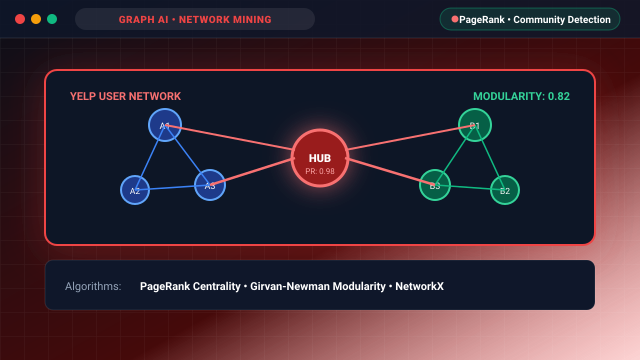
Large-scale graph analytics using Apache Spark GraphX and Pregel API for PageRank influence calculation, community detection, and geospatial clustering.
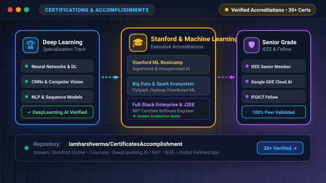
Curated repository of 30+ completed specializations spanning DeepLearning.AI, Google Cloud MLOps, Stanford GSB Executive Education, and Big Data Architecture.
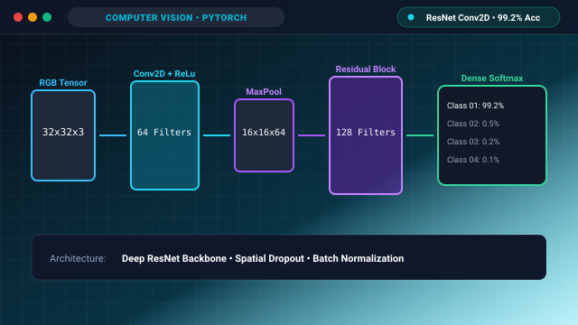
Multi-layer convolutional neural network featuring automated feature map extraction, batch normalization, spatial dropout, and dense softmax classification.
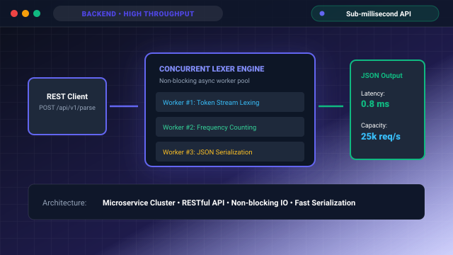
High-concurrency RESTful microservice gateway with Redis inverted-index caching, thread-pool worker distribution, and MapReduce-style frequency aggregation.
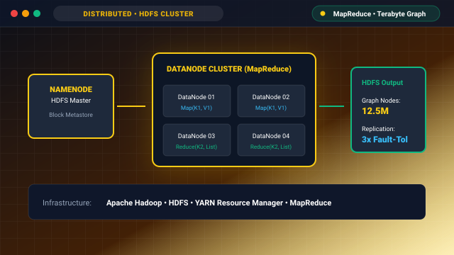
Multi-node Apache Hadoop cluster architecture running custom MapReduce jobs for social graph traversal, mutual friend recommendation, and degree distribution.
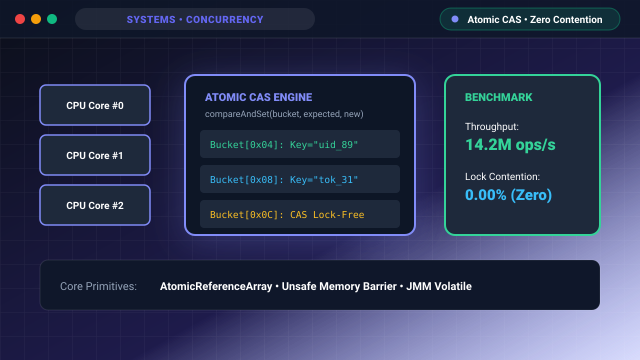
High-performance non-blocking concurrent hash table utilizing atomic Compare-And-Swap (CAS) primitives, striped memory buckets, and dynamic thread-safe resizing.
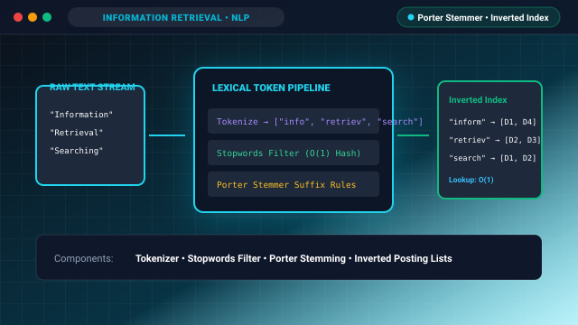
Finite-state lexical tokenizer and Porter Stemming automaton designed for high-speed indexing, stopword elimination, and inverted posting list generation.
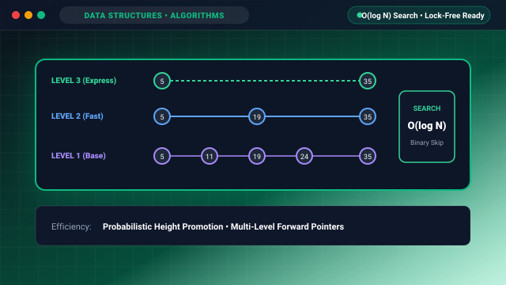
Multi-level probabilistic skip-list indexing engine achieving O(log n) search, insertion, and deletion complexity with optimal cache line locality.
A curated collection of specialized credentials spanning Deep Learning architectures, Google Cloud Platform MLOps, Distributed Big Data systems, and Enterprise Software Engineering from Coursera, DeepLearning.AI, UC San Diego, and industry leaders.